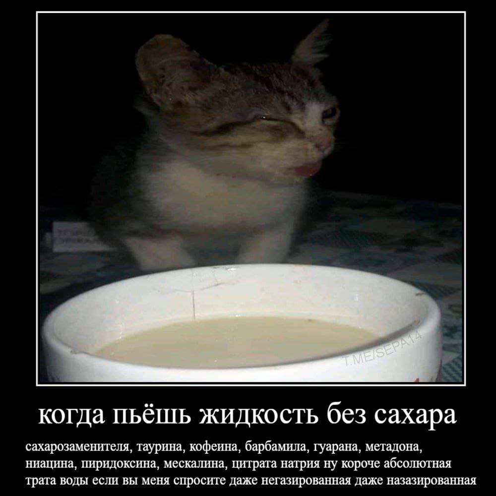
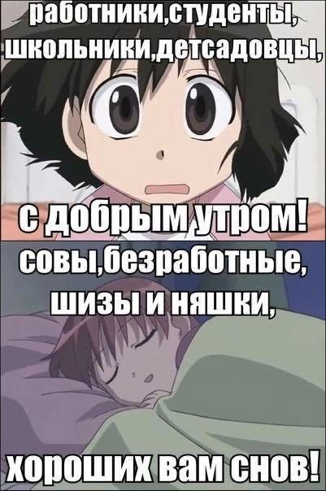

"Что сказал? Ещё раз вякни..."
Что сказал? Ещё раз вякни. Погоди, мне всё неясно. Чё твердишь? Какой тентакли? Что-то слышно мне ужасно. А, забыл тебе промолвить, Чтоб о чём-то здесь твердеть (Я решил не пустословить), Нужно ядеркой владеть.
"Ну давай, попробуй, что же..."
«Ну давай, попробуй, что же. Ты не медли, нападай. Ты чего, напуган может? Или проглотил насвай? Ну давай, давай, готовься, Я достал пилу-струну. Что стоишь, медведь? Охоться! Скоро я тебя порву.» А медведь, в корзинку рядом, Просто кинул чистотел. Проводил мужчину взглядом, Сел в машину и сгорел.
Почему прямоугольный?
Я решил сейчас наесться, Я поставил пиццу в печь. Сел у печки котик греться, Я хотел его отвлечь. В общем, кушать уже можно, Остаётся только взять, Противень вынуть осторожно И себе в тарелку класть. Ненадолго отвернулся... Погодите, а где жрать? Кот ехидно улыбнулся И улёгся тихо спать. Я ищу глазами кошку, Где мой кругленький комок? Он уж дрыхнет понемножку, Сделав лишь один глоток. Погодите, это ль норма? Кот совсем стал неприкольный. Не хватало что-ли корма? Почему прямоугольный?
А мне для счастья нужна только сладкая газированная водичка
Я устал искать комфорта, Я устал искать свой дом. Лишь пельмени на конфорку Греют душу зимним днём. Я устал, мне надоело! Я одно хочу сказать, Заявить об этом смело: Я устал и есть, и спать. Мне для счастья нужно мало: Дома посидеть, валяться, За компом сидеть устало, И водичкой наслаждаться.
Опрос о зверушках
Ранее я проводил опрос, в котором люди должны были выбрать зверушку, максимально соответствующую им. К этому был приурочен данный стих.
Я присел сегодня кушать, Осенило вдруг меня: Надо всех людей послушать, Пусть укажут на себя! Кто вы, мышка, да? Ну что же, Значит так и запишу. Ну а вы, бельчонок может? Вас ответить я прошу.
Не хотелось бы флиртовать, но...
Не хотел бы я случайно, Вас, красавица, смущать. Но хочу раскрыть я тайну: Не хотел б я флиртовать... Но признаться очень нужно: Я б вам сделал бутерброд, С вами ночью ели б дружно, Наблюдали небосвод. Что, простите, вы сказали? Нет, с деньгами не проблема. В интернете обещали, Есть от Маска одна тема...
Плечо.
Предыстория этого стиха гласит, что его автор (я), будучи уставшим, уснул в метро на плече молодой незнакомки. Нечаянно. А потом ушёл. Стыдно было, да.
День сегодня был нелёгкий, Раньше вышел и домой Полетел, подобно пробке. В общем, сел на поезд свой. Сел, а голове не легче Очень хочется мне спать. Ну уж очень я доверчив, Сразу начал я дремать. Две проехал остановки, ПОднял веки — рядом дама. Села, подогнув ветровку, Вся красива и нормальна. Я уснул, и видно там же На её плечо упал. От стыда меня и мажет, Для чего вообще я спал? Я, проснувшися смущённым, Просто сел и снова в сон. В этот миг, опять же сонный, Опустился как на трон. Снова открываю зенки: Твою мать, я что, опять? Я по новой жмуся к стенке, Начинаю я дремать. И доехал до конечной, Вышел там — она со мной. Это помнить буду вечно, Словно это зимний зной.
Тыквенные семечки
А что говорить?
Как-то я открыл телегу, Вижу мем, а в нём боксёр. Быстро я придался смеху, Хотя шутка — просто сор. Со смеху валялся долго, Мозг кипит, а глаз расширен. Времени понять немного — Интернет не анонимен
Мы все счастливы, ура!
Подсказка: читайте только заглавные буквы по вертикали.
Мы все счастливы, ура! И пожалуйста, поверьте. Раз уж вышли со двора, Опасайтесь — кругом черти. Вы, конечно, не поймёте, О чём я сейчас скажу, Если далеко зайдёте, Поверните вы к ежу. Разве он для вас опасен? А, конечно, не сказал. Вы познайте: мир ужасен. И познал я, ночь не спал. Ты, конечно, не амёба, Если волю дал уродам. Лишь родился ты, и всё. ЬСтарый давний ничего. Тёплые лучи рассвета Вы все солнышком пригреты. О, вам надо подсказать: Харю нужно закрывать! Острый меч пронзает реки, Чёрные вы или греки. Есть один для вас секрет: Тёплый яркий новый дед. Мы все с вами не дебилы, Есть у нас немало силы. Нужно, значит, всё понять, Я не говорю «Не трать». У вас всех, конечно, много Бесов, что сжирают ноги. И вам нужно всем понять: Там сердечки нужно слать. Ь
Первое января.
Как-то собрались все вместе Разных сволочи мастей. Натворить решили жести, Созывая всех чертей. «А давайте вместе будем Подрывать всё что найдём. Оторвётся что — остудим, Утром лишь вернёмся в дом». Сволочи. Ублюдки. Мрази. Больше нечего сказать. Лишь в глазёнках ваших стразы. НУ ЗАЧЕМ ЖЕ ВСЁ ВЗРЫВАТЬ?
Я вдруг понял: я...

«Почему же я расстроен? Что опять пошло не так? Отчего я беспокоен?»— Снова просят подать знак. Задолбали, отвечаю: Просто раз и навсегда Высечьте, не повторяю: Я потрогал провода... А потом, случилось чудо, Я не умер, я лишь спал. Но очнулся — дело худо, Я вдруг понял: я Урал.
Важный вопрос.
Я помыл посуду, что же, Нужно срочно всем сказать. Интересно это, может Нужно в чаты разослать? Ладно, это вы забудьте. Есть один большой вопрос. Вы его не обессудьте, У вас был вчера понос?
Дедушке кошка в квартире не нравится
Дедушке кошка в квартире не нравится, Хочет от кошки старый избавиться. Кошка не знает, что с ней не так, Просит подать она старого знак. Тот ей в ответ не ответил ничем, В спальне закрылся источник проблем. Кошка взглянула: «Ну и не надо». Мышку нашла — вот ей награда. Старый же в кресле томно храпит, Чувствует он: что-то рядом смрадит. Медленным шагом идёт как по стуже, Дед вдруг упал — поcкользнулся на луже.
Как приготовить картофельный бутерброд?
А вы знаете как кушать С кайфом и без угнетений? Значит, нужно вам послушать! Мануальчик для растений: А сегодня, на весь взвод, Иль бригаду, или роту, Сделаем мы бутерброд. Он не должен вызвать рвоту. Для начала нужно нам Выкопать ведро картошки. От неё отбросить хлам, После отдохнуть немножко. Ломтик вырезать большой, Его в масло, после соль. Далее мотив простой: Причиняем себе боль. Вырезав себе две кости, Выньте хлеб из рюкзака. На него вы мясо бросьте (Его взять из дурака). После сверху покрываем, Тем, что жарили недавно, И немного остужаем... Вроде вышло не погано.
"Значит есть у меня сыночек..."
На самом деле, это сатира. Здесь есть смысл, не думайте.
— Значит, есть у меня сыночек, До сих пор не туда он срёт. И расходую я порошочек, А говном всё как раньше несёт. Я даю ему новой одежды, А он снова насрёт, и опять Потеряю свои я надежды, Что сыночек научится срать. — А вы собственно, дама не знали, Что проблема, как корень, из вас? Словно вы туда, сволочь, насрали, Словно сами исторгли вы газ. Не ищите же вы оправданий! Вам не стоит винить никого. Я не вижу ни капли стараний, Только вижу я снова говно./p>
Авокадо
С удовольствием, улыбкой, Режу быстро авокадо. Правда там опять не шибко: Мне такого и не надо. Что внутри? Опять поганый Чёрствый деревянный шар. Ну когда ублюдок драный Туда сунет самовар?
Если бы красота была...
— Если бы прекрасность мигом Превратилась в кал и шлак, Тотчас стала б ты сортиром, После суток натощак. — Гражданин, но вы мне льстите! Вся была бы я чиста! —Нет, мадам, меня простите, Были б вы как тошнота. Как в бочине боль сквозная, Как гастрит иль как разврат. В общем, были бы без края Негативны, как и смрад.
Господа, я чуть позже отвечу.
— Господа, я чуть позже отвечу. Вам не стоит меня торопить. И не думайте, что не замечу: Ну откуда привычка спешить? Господа и милейшие дамы, Я прошу извинить, я забыл. И теперь, переполненный срамом, Я жалею, что всё отложил
Зря вчера употреблял.
— Так, посмотрим, что у нас? — Посмотрел в бумагу лекарь — Это ужас! — я весь в пляс — Нужен вам тут не аптекарь! Вам бы взять, и через глаз, Маленькой такой палчонкой Сократить в пятнадцать раз Мозг до уровня галчонка. Далее, постановляю: Принудительно, скорее! Вас достоинств пусть лишают, Разум может побелеет. А ещё, скажу я вам: Вам скорее бы ложиться, Проглотить подъёмный кран, Жижи тормозной напиться. — Я весь в шоке, обернулся. А где доктор? Где пропал? Мигом снова я очнулся: Зря вчера употреблял...
На сидение волкам...
Один мужик купил диван, А старый мигом вывез в лес. Молчит диван: «Сплошной обман! Теперь я в землю давлю вес». Из чаши видит он два глаза, Остолбенел, притих, стоит. «Он оборвёт обивку разом И в раз меня изворошит!». Но тут четыре лапы чует И тёплый, волчий мягкий мех. От этого он негодует, Внутри него бушует смех.
Отведайте эчпочмак!
—Каша есть завтрак ужасный, Да кто её в принципе ест? И я говорю не напрасно: На вкус она словно асбест! —Тогда растолкуйте, милейший, А что же мне кушать, дай знак! —Ответ мой, мадама, яснейший: Отведайте вы эчпочмак!
Обожаю... Что?!
Расслабляюсь только в доте, Днём опять кричу в полёте. Мать бы сделала аборт — Люблю экстремальный спорт. Мотоциклы, самолёты, Велогонки и рассчёты. Клал на кучу укоризн — Обожаю экстремизм!
"Все вы, мерзкие орубки..."
Все вы, мерзкие обрубки, Приползёте как-нибудь, Все мои сожрёте губки, Выпьете параши муть. Скажете: «Прости, милейший! Мы неправы, признаём. Разум был совсем малейший, С горьким прошлым мы живём. Расскажи же нам скорее Ты про расточительство. Как убить, и кто посмеет Мира всё правительство». Я скажу: «Плевать, забыли. Раз уж чип был удалён, Значит снова вы ожили. Ныне каждый просветлён: Есть ублюдки, мрази с властью, Правят миром “навсегда”. Разве в этом скрыто счастье? Ой ублюдки, ой беда! Но не бойтесь, мы прорвёмся, И наш гордый батальон Высечет: «Ещё вернёмся». Им скуём мы медальон. Тех, кто с чипом, всех погубим. Их жалеть? Да мне плевать. Кто развратничал — осудим. Сразу кончим горевать».
Когда пьёшь жидкость без вкуса
Ненавижу напитки без вкуса, Без сахара, газа, эффекта. Но даже и в них сЫскать плюсы Намного дороже, чем летом В жару, в безымянные знои Пить то, что попалось под руку. Противиться, молвить с собою О том, как окончить ту муку.
Каракатица
Есть прикольная зверушка, Под водой всегда сидит. Нет ни хвостика, ни ушка. Жопа есть, но не пердит. Она ест, при этом много. В основном, конечно, рыб. Вкус похож на осьминога, Обитает, где магриб¹. В основном сидит уныло Где-то там себе на дне. Как кого-то осенило Это слово молвить мне?
"Доброго дня, уставшие люди..."
Доброго дня, уставшие люди! Школьники, дети и люди с заводов, Работники, льготники, кто вас рассудит... Доброго всем, не считая уродов! Спокойного сна, безработные няшки, Совы и шизики, психи, другие. Вечером ждёт вас рассвет и вкусняшки, Спокойного сна, да пребудьте живые!
Пятьдесят оттенков рюкзачков
На самом деле этот стих писался единожды, в ночь с первого на второе сентября (первый учебный понедельник). Однако со временем я начал писать другие, и в один день пошутил про "пятьдесят оттенков рюкзачков". Моя жизнь больше не будет прежней...
Все собрали рюкзачки? Промывайте же зрачки! Скоро в школу торопиться, Маме дневником хвалиться Все собрали рюкзачки? Так пожарьте кабачки! Скоро в школу, вам, детишки, Ешьте кабачки(и шишки) Все собрали рюкзачки? Покупайте же очки! Чтоб не словно сквозь тиски Видели вы текст с доски Всё собрали рюкзачки? Собирайте же бычки! Говорю я, дети, вам: Курит лишь тупой болван! Все собрали рюкзачки? Жарьте же окорочки́! После школы, гадам в месть, Очень важно всем поесть Все собрали рюкзачки? У подъезда ждут качки! Я им денег заплатил, Чтоб гусь к вам не подходил Все собрали рюкзачки? Покупайте молотки! Нужно гвозди забивать, Полку вешать помогать Все собрали рюкзачки? Так берите же крючки! Перестаньте давить лыбу И спешите ловить рыбу! Все собрали рюкзачки? Покупайте же сачки! Чтобы, дети, не курить, Надо бабочек ловить Все собрали рюкзачки? Ждут вас, дети, казачки. Те хотят напиться с Дона, Получить болезнь Крона Все собрали рюкзачки? Жарьте, дети, мозжечки! Сладкий вкус чужых голов Даст вам силу всех быков Все собрали рюкзачки? Надевайте сапоги! Будет мокро скоро, дети, Главное — не заболейте Все собрали рюкзачки? Так готовьте кулачки! Может дядя к вам прийти, Трогать где-то взаперти Все собрали рюкзачки? Открывайте чердачки! Всем советую не спать, Солнце ясное встречать Все собрали рюкзачки? Посмотрите, есть жучки? Враг всегда следит за вами, Идёт вашими шагами Все собрали рюкзачки? Одевайте колпачки! Бошку можно простудить И потом в кровати жить Все собрали рюкзачки? Так ищите маячки! Вдруг за вами есть наряд Что вас взять с поличным рад Все собрали рюкзачки? Рядом с вами паучки! Лучше их не обижать, Паутину не снимать. Все собрали рюкзачки? Вас всех ищут мужички! На приоре вам опять Нужно фары поменять Все собрали рюкзачки? Одевайте же значки! Вам всем скоро всё равно Сдавать нужно ГТО Все собрали рюкзачки? Прикусите язычки! Не злословьте вы, ребята, Ваша мама будет рада. Все собрали рюкзачки? Так готовьте кошельки! Уронил я курс валюты На уроки Камасутры... Все собрали рюкзачки? Разбирайтесь по-мужски! Негоже, коль есть башка, Делать зло исподтишка Все собрали рюкзачки? Надевайте пиджачки! Чтобы были вы красивы Словно есть у вас две ксивы Все собрали рюкзачки? Не тупейте, слабачки! Чтоб вас каждый уважал, Надо просто ходить в зал Все собрали рюкзачки? Не страдайте от тоски! Грусть вас медленно убьёт, Счастье же вас всех спасёт Все собрали рюкзачки? Ваши ставки высоки! Улицы всегда опасны, Домочадцы же прекрасны Все собрали рюкзачки? Так готовьтесь, землячки! Снова нация встаёт, Всех врагов Господних рвёт Все собрали рюкзачки? А вас ждут поставщики! Надо сделку оформлять, Килограммы покупать Все собрали рюкзачки? А вас клюнут индюки! Гусь их разом разозлил И на вас всех натравил Все собрали рюкзачки? — Скоро! — ждут снеговички. Скоро снова снег пойдёт И украсит небосвод Все собрали рюкзачки? Ладно, школа — пустяки. Научитесь лучше вы Грызть берёзу, как бобры Все собрали рюкзачки? Так включайте ночники! Нужно раньше лечь поспать, Чтобы утром сразу встать Все собрали рюкзачки? Жарьте овощей стручки! Овощи полезны всем, Избавляют от проблем Все собрали рюкзачки? Покидайте теремки! В школу всем давно пора, Дети, деды, господа... Все собрали рюкзачки? Покупайте же мешки! Тело можно вывозить, Если можете прикрыть Все собрали рюкзачки? Собирайте лежачки! Всем положено вам спать, На природе отдыхать Все собрали рюкзачки? Вы не суйте пятачки В личное других людей, Если только вы умней Все собрали рюкзачки? Подтирайте пердачки! Не должны в округе знать Что вы любите вонять Все собрали рюкзачки? Слишком поздно, дурачки! Ваше время позади, Так что линий не черти Все собрали рюкзачки? Бейтесь, тварям вопреки! Только в битве можно жить И семью освободить Все собрали рюкзачки? К вам не клюнут судаки! Чтобы рыба могла клюнуть На приманку надо плюнуть Все собрали рюкзачки? А вокруг одни торчки! С ними, дети, не общайтесь, Лучше дома развивайтесь Все собрали рюкзачки? Не забудьте класть носки! Простывать совсем не надо, Кто болеет — будет гадом Все собрали рюкзачки? Вдалеке есть огоньки! Засыпает город к ночи, Разжигая свои очи Все собрали рюкзачки? Подготовьте-ка платки! Скоро будут вас ругать, Грязью с хреном поливать Все собрали рюкзачки? У подъезда ждут щенки! Нужно их всех вам кормить Чтобы добрым дядей быть Все собрали рюкзачки? Не пускайте вы слушки! Это гиблое дельцо, Я таким харкал в лицо Все собрали рюкзачки? Встретьте утро у реки! Это был стишок последний, Яркий, тёплый, свежий, летний